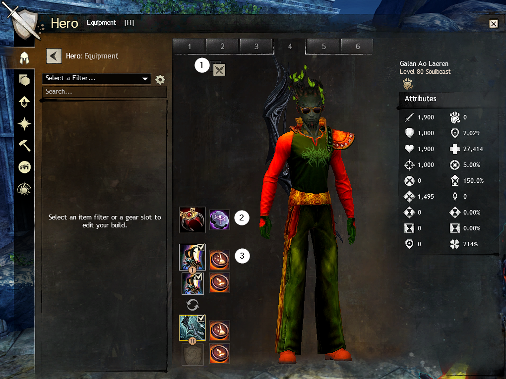

Builds #
Equipment #
PvP is the easiest game mode to get started with because you don’t need any special gear! In PvP, all your stats are normalized. Everyone is on a level playing field. All you need are starter armour and weapons. You don’t even need any trinkets. None of the stats matter.

1: Toggle #
Clicking this icon here is how you switch between your PvE and PvP equipment sets.
2: Amulet & Rune #
This is what replaces all the stats you’d usually get from armour and weapons. And the runes are similar to what exist in PvE, but it gives the full effect as if you had all six runes in PvE.
3: Weapons & Sigils #
The weapons are purely aesthetic. Their stats don’t matter. The sigils selected here are separate from any sigils actually slotted into the weapon.
Classes #
Every class has a place in PvP, though some have more narrow niches than others. When first starting, it’s best to start with a common build from GodsOfPvP or one of Vallun’s starter builds. Don’t hesitate to ask in the Discord PvP channel for help. There are many viable builds out there.
Roles #
Regardless of class, your build will be tuned to fill one of four roles. Knowing your role is essential to deciding what to do in any given moment of the game. GodsOfPvP helpfully labels its builds with its primary role.
- DPS
- These are classes that deal big damage but have little self-sustain. They will always try to stay in a group (a teamfight) and will rely on their supports.
- Support
- These are the healers and boon givers. They rarely do much damage on their own. So like DPSers, they prefer teamfights
- Duelist/Sidenoder
- These builds excel in 1v1 and are competitive (at least durable) in 1vX. They avoid teamfights, preferring to take and protect nodes on their own.
- Roamer
- These classes are highly mobile and have strong damage. Because of their mobility, their two main jobs are to quickly decap enemy nodes and to “+1” fights to rack up kills.